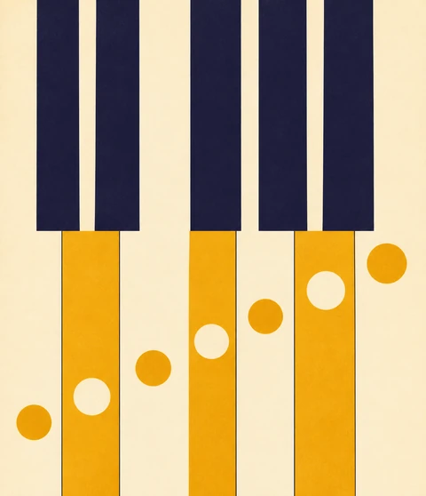

全部教材
设置
主题配色
纸白
米浆
雾蓝
淡紫
烟粉
薄荷
琥珀
石墨
午夜蓝

钢琴演奏技巧30课
按文武贝编著的教程顺序，从五指热身、音阶和双音，到踏板、复调与综合练习。每课附技术要点和完整练习谱。
从第一课开始
→
五指、音阶与琶音
第 1 课
五指热身练习
第 2 课
全音阶练习
第 3 课
半音阶练习
第 4 课
琶音练习
第 5 课
4 指、5 指练习
第 6 课
左手练习
双音与和弦手位
第 7 课
三度音练习
第 8 课
六度音练习
第 9 课
八度音练习
第 10 课
手指张力练习
触键、节奏与力度
第 11 课
断奏练习
第 12 课
音的颗粒感练习
第 13 课
切分音练习
第 14 课
三对二节奏型练习
第 15 课
Swing（摇摆）练习
第 16 课
力度变换练习
第 17 课
柔音练习
踏板、声部与双手配合
第 18 课
延音踏板练习
第 19 课
保持音练习
第 20 课
复调练习
第 21 课
Funk（放克）节奏练习
跳跃与快速音型
第 22 课
大跳练习
第 23 课
轮指练习
第 24 课
震音练习
第 25 课
颤音练习
第 26 课
刮奏练习
第 27 课
黑键练习
综合练习
第 28 课
综合练习 1
第 29 课
综合练习 2
第 30 课
综合练习 3